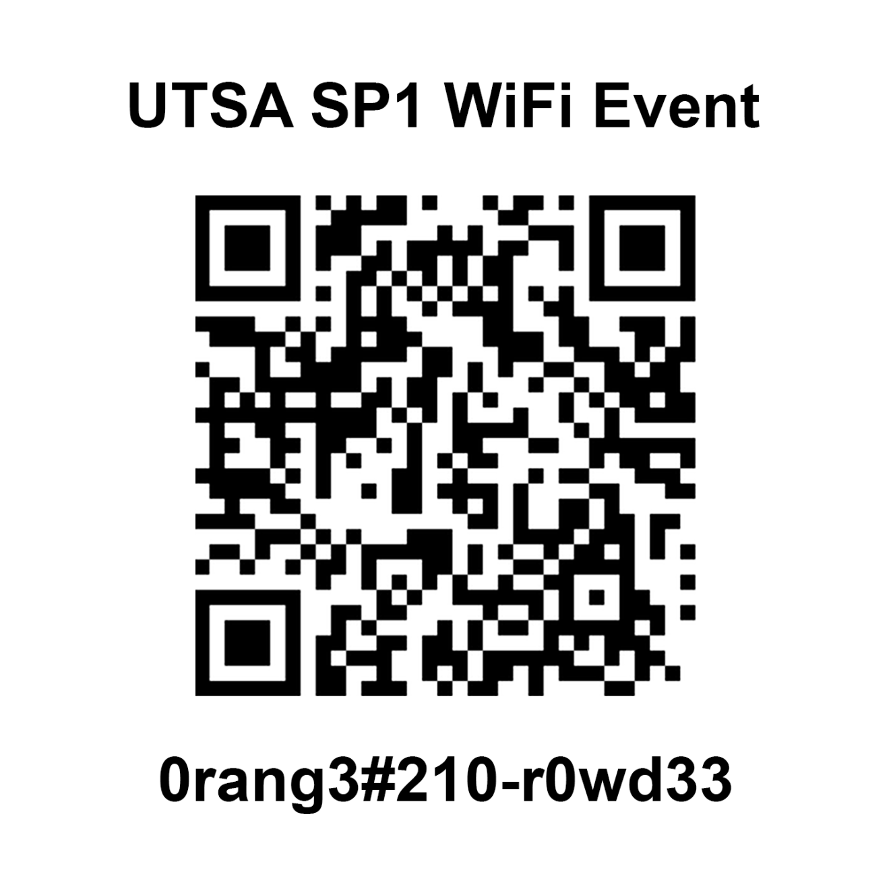
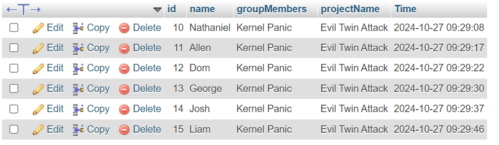

!! TIME MACHINE BACK !!
You Almost got your Info Taken
What is an Evil Twin Attack?
An Evil Twin Attack is a type of Wi-Fi security threat where a malicious wireless access point masquerades as a legitimate Wi-Fi network. Attackers set up a fake hotspot with a name similar to a genuine network to trick users into connecting. Once connected, the attacker can intercept sensitive data such as login credentials, personal information, and other confidential communications.
How to Avoid Connecting to the Wrong Wi-Fi
Here are some tips to help you avoid falling victim to an Evil Twin Attack:
- Always verify the network name (SSID) before connecting. Be cautious if multiple networks have similar names.
- Ask the establishment (e.g., cafe, airport) for the exact Wi-Fi network name and password.
- Avoid connecting to open Wi-Fi networks that do not require a password.
- Use a Virtual Private Network (VPN) to encrypt your data when using public Wi-Fi.
- Keep your device's firewall and antivirus software up to date.
Why We Did This
This demonstration was created to raise awareness about Wi-Fi security risks and the importance of being vigilant when connecting to wireless networks. By experiencing a simulated Evil Twin Attack, users can better understand the potential dangers and learn how to protect themselves from real-world threats.
How to Connect to the Real Wi-Fi
To ensure you are connecting to the legitimate Wi-Fi network, follow these steps:
- Disconnect from the current Wi-Fi network.
- Scan for available Wi-Fi networks.
- Select the official Wi-Fi network, which is named "UTSA SP1 Wifi Event" (with 2 lowercase i's).
- Enter the correct password provided by the establishment.
If you are unsure about the correct network, please ask a staff member for assistance.
Why We Couldn't Use a Database to Store Your Data
Due to guidelines and suggestions provided by RowdyHacks, we chose not to store your submitted data in a database for this demonstration. This decision was made to prioritize your privacy and adhere to event policies that discourage the collection of personal information without explicit consent.
How We Could Have Used PHP and SQL to Store Data
Under different circumstances, we could have implemented a system to store your data using PHP and an SQL database. PHP is a server-side scripting language that can handle form data submitted via HTML forms. By connecting PHP to an SQL database, we could securely store information such as names, group names, and the number of members for further processing or analysis.
How Information Can Be Used Maliciously
Collecting and storing personal information without proper safeguards can pose significant security risks. Malicious actors may exploit vulnerabilities to access sensitive data, leading to privacy breaches, identity theft, or targeted phishing attacks.
In more deceptive scenarios, attackers might ask for additional sensitive information such as emails, passwords, or other Personally Identifiable Information (PII). By disguising malicious intent behind legitimate-looking forms or requests, they can trick users into willingly providing confidential data.
It's crucial to handle user data responsibly by implementing strong security measures, such as:
- Using secure coding practices to prevent vulnerabilities like SQL injection and cross-site scripting (XSS).
- Encrypting sensitive data both in transit and at rest.
- Implementing access controls and authentication to restrict database access.
- Regularly updating and patching software to protect against known exploits.
- Being transparent with users about what data is collected and how it will be used.
By understanding these risks, we aim to highlight the importance of data security and encourage responsible handling of personal information in all digital interactions. Always exercise caution when asked to provide sensitive information and ensure that the request comes from a trusted and verified source.